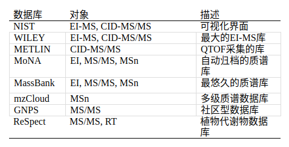

1质谱数据库
根据化合物的二级质谱图对比质谱数据库是当前最快且最主流的用于化合物鉴定的手段。目前，公开的和商业化的质谱数据库包括了1-2百万张质谱图谱。
这些质谱数据一般都是用标准品采集的质谱信息，然后经授权上传到数据库中。近年来，通过计算机模拟生成in silico质谱图谱，也渐渐成为了质谱数据库的新宠。
数据库中代谢物的信息也逐步全面，包括采集的仪器类型、碰撞能量、电离模式、分子结构信息，如InChIKey或SPLASH这些能用于化合物分子结构和质谱信息的表达形式。InChIKey和SPLASH分别是分子结构和质谱信息的唯一标识代码。
下表列出了常用的质谱数据库信息和囊括范围。

就覆盖率而言，使用多平台多数据库匹配的方式在NIST标准血清中可以鉴定出400多种代谢物。美国国立卫生研究院NIH共同基金的代谢组学试验，多个美国实验室的参与该实验，使用多种技术通过质谱图比对匹配，鉴定了约1,000种代谢物。 然而，通过结合5个平台的靶向和非靶向代谢组学研究报道中，血浆或血清代谢物涵盖了5,000种化合物。
很多数据库都嵌入峰检测和质谱解卷积的算法功能，其中公开免费的质谱相似度对比软件包括：NIST MS Search GUI，NIST MS PepSearch和MS-DIAL等。当然很多质谱供应商也自带商业化的具有类似功能的质谱分析软件，如安捷伦的MPP，Waters的QI，力可的Chrome等。
2. 相似度算法
关于质谱图相似度对比得分有很多种算法，比如可能性匹配，点-积搜索（dot-product）和其他相似性度检索。最近报道了一种新型的用于未知物质谱图混合相似度检索算法（hybrid similarity search），该算法没有算母离子的m/z，而是根据中性丢失和质谱碎片模式来计算相似度。质谱图的相似度从某种程度上就意味着分子结构的相似性，利用这一特征这可以用于鉴定未知物。聚类相似算法，通过对结构相似的化合物进行聚类来使用产物离子质谱图的余弦相似性的聚类方法，该方法可以改进对未知代谢物的注释。尽管用质谱数据库快速比对有很多优势，但是质谱相似度的算法的科学性也需要优化，尤其是仅有少量碎片信息的产物离子。此外，不同的仪器产生的二级质谱碎片的信息也有所差异，所建立的数据库需要充分考虑这些因素。因此，那些可以计算假阳性率的算法将大大提升质谱数据库比对鉴定的代谢物的质量。
3. 数据共享
现流行的数据共享模式，通过上传高质量的质谱图到数据库中。MassBank数据库（http://massbank.jp）是最成功的例子之一，拥有广泛的用户群和来自许多不同国家的贡献者。在数据库服务器联盟中，European MassBank efforts数据库（https://massbank.eu/）和MassBank of North America（http://massbank.us/）能够最新的共享注释结构的质谱图谱，包括自动整合的质谱图和化学结构信息（InChIkey）。相比之下，GNPS质谱数据库可以利用众包方法来标注未知化合物。商业化的数据库如NIST，依然起到非常重要的作用，因为它有着高水平的人工管理，整体良好的数据质量和广泛的物质覆盖。
常见的公开的数据库下载链接：
LC-MSMS
MassBank MS/MS Positive (8412 records) MassBank (Positive)：
http://prime.psc.riken.jp/Metabolomics_Software/MS-DIAL/MSMS-MassBank-Curated-Pos.msp
MassBank MS/MS Negative (5038 records) MassBank (Negative)：
http://prime.psc.riken.jp/Metabolomics_Software/MS-DIAL/MSMS-MassBank-Curated-Neg.msp
ReSpect MS/MS Positive (2768 records) ReSpect (Positive).
http://prime.psc.riken.jp/Metabolomics_Software/MS-DIAL/MSMS-Respect-Curated-Pos.msp
ReSpect MS/MS Negative (1628 records) ReSpect (Negative).
http://prime.psc.riken.jp/Metabolomics_Software/MS-DIAL/MSMS-Respect-Curated-Neg.msp
GNPS MS/MS Positive (3771 records) GNPS (Positive).
http://prime.psc.riken.jp/Metabolomics_Software/MS-DIAL/MSMS-GNPS-Curated-Pos.msp
GNPS MS/MS Negative (153 records) GNPS (Negative).
http://prime.psc.riken.jp/Metabolomics_Software/MS-DIAL/MSMS-GNPS-Curated-Neg.msp
HMDB (4,620 spectra)
http://mona.fiehnlab.ucdavis.edu/rest/downloads/retrieve/3c09b8ce-05f8-4206-8c1d-da403f1a286
LipidBlast (135,456 spectra)
http://mona.fiehnlab.ucdavis.edu/rest/downloads/retrieve/a5255f4d-6aca-4451-bb0a-6fcb0e2e8bf0
Fiehn HILIC (3,290 spectra)
http://mona.fiehnlab.ucdavis.edu/rest/downloads/retrieve/ee407076-9f11-4af8-b380-d34dde2a66c8
In-Silico Spectra (139,746 spectra)
http://mona.fiehnlab.ucdavis.edu/rest/downloads/retrieve/eaaeddae-fa3a-4799-a334-281af1c04ec6
GC-MS
Fiehn BinBase DB (Rtx5-Sil MS, FAMEs RI, 1021 records) Fiehn BinBase.
http://prime.psc.riken.jp/Metabolomics_Software/MS-DIAL/GCMS DB_FiehnBinbase-FiehnRI.msp
MassBank and MoNA EI-MS DB with predicted RIs (CPSil-8CB, Kovats RI, 14,017 records) Public records with predicted RIs.
http://prime.psc.riken.jp/Metabolomics_Software/MSDIAL/GCMS DB publicly available records.msp